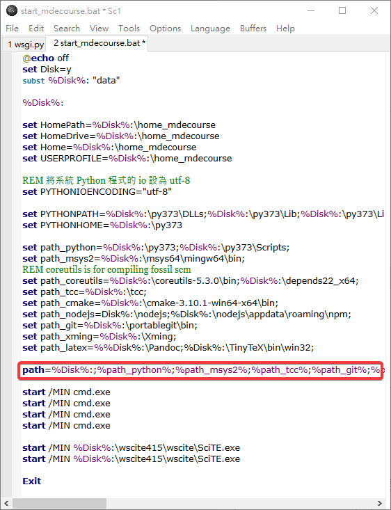
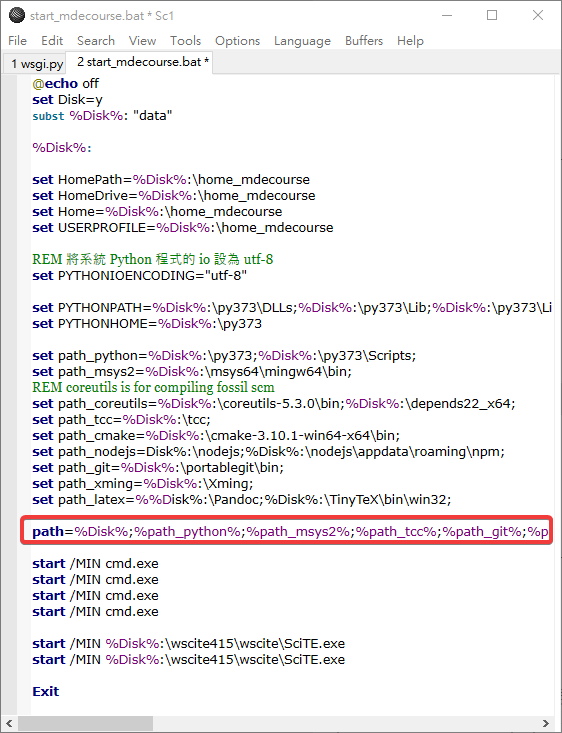
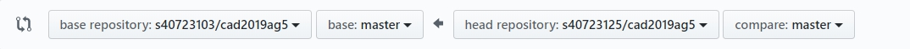
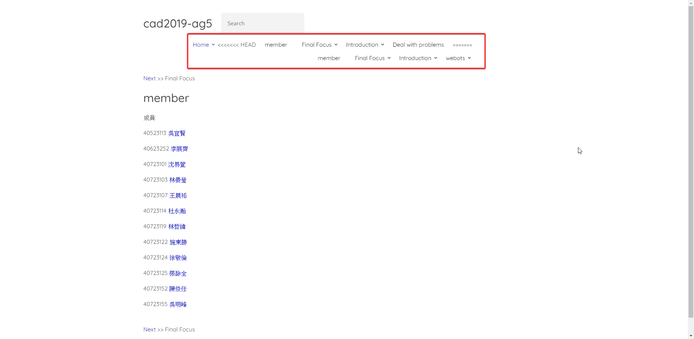
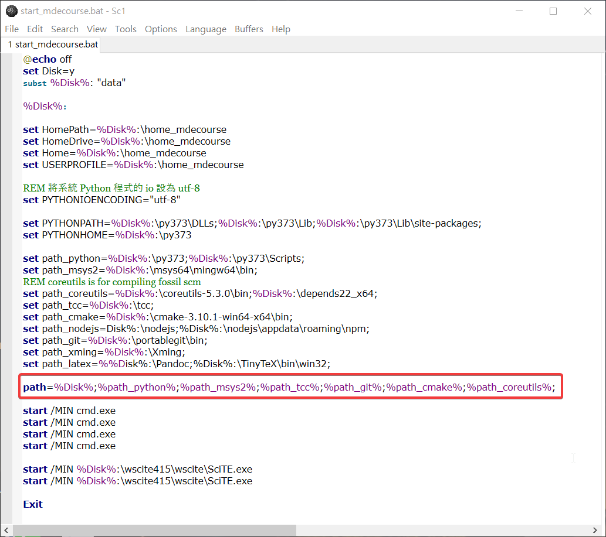

About <<
Previous Next >> webots
處理錯誤程序
Q當倉儲git pull+分組倉儲網址後發現無法正常開啟近端
A:
將倉儲start鍵放入文字編輯器並且查看，發現有多一個分號（：），將分號刪除並儲存後即可進入近端。
RESEASON原因：
因為有人倉儲本身是壞的，因此當其他人gitpull時會讓他人倉儲錯誤，造成倉儲近端損毀。
Before

After

Q為什麼用了git pull 分組倉儲網址完無法正確連結完成並進行改
A:
先將倉儲中最新版本反向拉回（左為本身，右為管理者）並且git commit git push上去後再次進入近端即可改為最新版本進行改版推送
EX:

RESEASON(原因 ):
有可能因為尚未推送回分組倉儲使最新版本與自身隨身碟中可攜系統舊版沒有連結成功，因此git pull 分組倉儲網址完進入近端才會還是舊版
Q為什麼管理員merge完會使倉儲爆掉，產生舊版與新版衝突(如下)

A:
在這次解決問題中，由於近端未有衝突問題並且使用正常，進入近端按下轉靜態後再次git push上傳即可恢復網頁
RESEASON(原因 ):
有可能是因為其中一位倉儲推送上去使用到git pull的緣故使得新舊版產生合併問題，造成有兩個版面的緣由
Q進入近端卻直接跳下一行並沒有做任何作動
EX:
D:\87\cmsimde>python wsgi.py
D:\87\cmsimde>
A:
將啟動程式按鍵(start_mdecourse.bat)拖曳到SciTe裡，並將裡面其中一行程式多餘的開頭程式%path%刪除，重新啟動(按下Stop.bat)即可恢復正常。

如上圖所示，但前面的%path%以更改完畢，因此範例中的程式是已經改善完畢的。
RESEASON(原因 ):
因為%path%為進入近端之bug，需查看是否修正完畢。
About <<
Previous Next >> webots